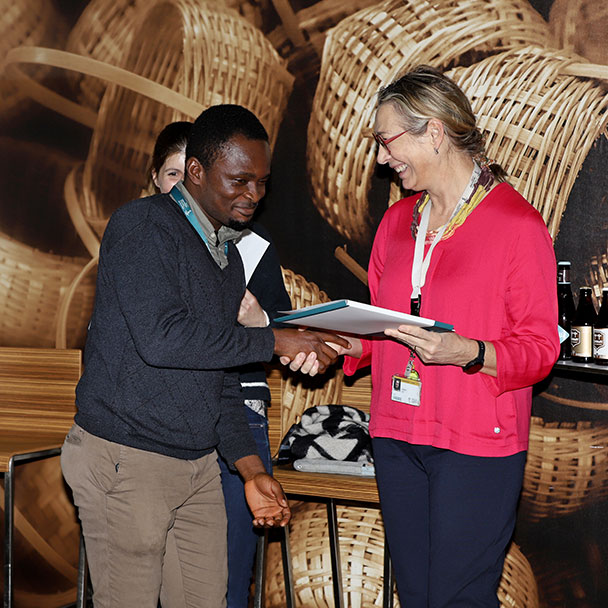

Advance Diploma – Molecular Biology, 03/2024
Institute of Tropical Medicine – Antwerp, Belgium
Grade: Credit (70.1/100)
Bachelor of Science – Microbiology, 08/2019
Olabisi Onabanjo University – Ogun, Nigeria
Grade: Second Class Honors
Published Papers
Okwuraiwe, A.P., Ogbonne, E.L., Adeniyi, A.O., Shodipe, O.O., Ihurhe, P.I., Musa, B.O., Abe, T.R., Audu, R.A (March 28, 2024) Detection of High-Risk Human Papillomavirus Genotypes Among HIV-Infected Women in Four States in Nigeria. Cureus 16(3): e57120. doi:10.7759/cureus.57120
Ogunjobi, T. T., Ohaeri, P. N., Akintola, O. T., Atanda, D. O. ., Orji, F. P., Adebayo, J. O. ., Abdul, S. O., Eji, C. A., Asebebe, A. B., Shodipe, O. O. ., & Adedeji, O. O. (2024). Bioinformatics Applications in Chronic Diseases: A Comprehensive Review of Genomic, Transcriptomics, Proteomic, Metabolomics, and Machine Learning Approaches. Medinformatics. https://doi.org/10.47852/bonviewMEDIN42022335
4
Years
experience
experience
5
Honors &
Awards
Awards
8
Projects
Participated
Participated
